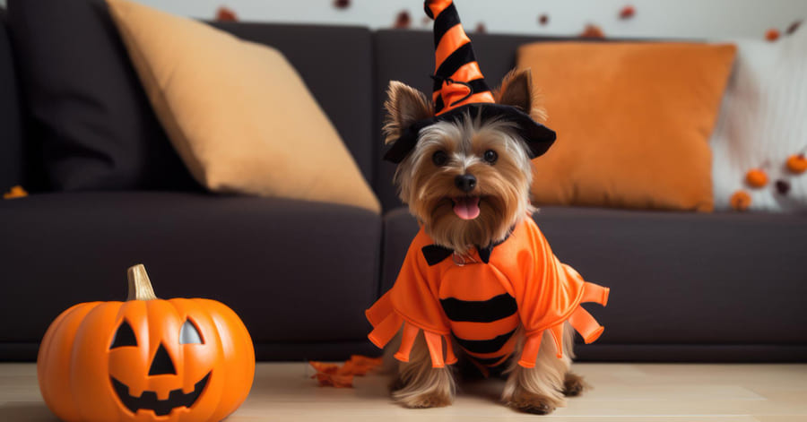
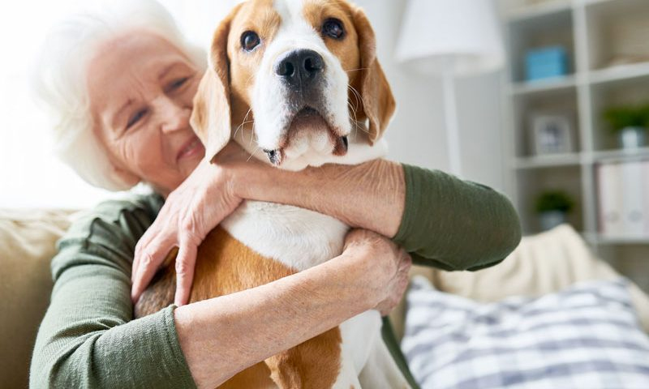
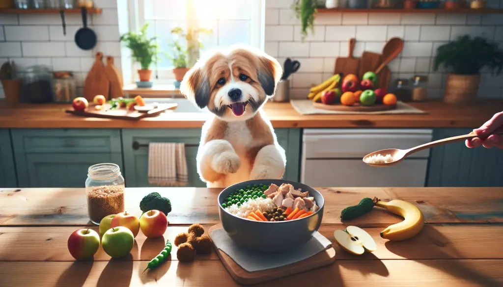

{{ bienvenidos }}
{{ email }}
NOTICIAS

Día de los Muertos para perros
En Puebla, México, una iniciativa ha incluido calaveritas comestibles para mascotas en la celebración del Día de Muertos, permitiendo a los dueños recordar a sus amigos peludos en este día especial. Este homenaje incluye figuras de calaveras para perros y gatos, una novedad que ha generado gran interés entre los amantes de los animales

La influencia de los perros en la salud mental:
En el ámbito de la salud, se ha destacado cómo el vínculo con los perros puede beneficiar la salud mental. Un ejemplo reciente es James Middleton, quien atribuye su recuperación de una depresión a su perra Ella, una cocker spaniel que lo ha acompañado en momentos difíciles

Nueva tendencia en alimentación canina:
Las tiendas de mascotas están ofreciendo alimentos especializados para perros que llevan un estilo de vida activo o que necesitan dietas específicas, como piensos bajos en grasa para perros con problemas de peso. Esta tendencia responde a la creciente preocupación de los dueños por ofrecer dietas más saludables a sus mascotas